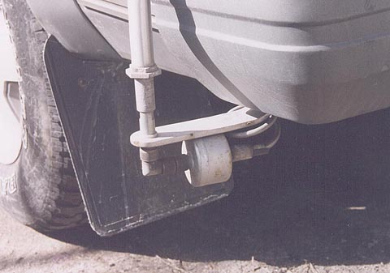

Unfortunately this picture of the Transmission Line transformer doesn't show much but a description should suffice.
Mechanically, it is built into a tin 35mm film canister. An S0-239 is soldered on both sides to permit easy installation/removal
"on the fly" for switching to 20 meters. Internally are two ferrite cores wound with two RG-147 teflon coaxial cables in paralell.
These are paralelled to give a 25 ohm nominal impedance. Ideally the tranmission line itself should be the mean of the two
terminating impedances. For more detail on this I would refer you to Doug Demaw's excellent book on Transmission Line Transformers
available from ARRL. I don't know why but the idea of using parallel windings for this purpose isn't suggested in the book.
So I take credit for assuming the obvious. It works!
The great advantage of this over other (more popular) methods of matching, such as tapped coils, and tuned shunts, is that
it's not sensitive to frequency. Or in other words, the matching device does not effect the resonant frequency of the antenna.
Once your antenna is resonant you could remove the xfmr and still operate with reasonable effectivness. Yes your SWR will rise
but your antenna currents will still be where you need them to radiate effectivley. Similarly, you can retune, or change bands
(40 meters in my case) and not have to play with the matching network at all. BTW, input impedance on this antenna on 40 meters
is about 17 ohms, so the transformer still does a good job matching down from 50.
75m bandwidth is 9 KHz and 40m bandwidth is 16 KHz on this antenna. If you don't have a tuner in your radio you can operate
reasonably well over this bandwidth without it. After that you have to move your coil taps. I keep a wire with alligator clips
in the glove box when I want to move around from my fixed (switched) positions.
I've run this antenna with only minor physical modification for over 6 years without any problems.I encourage you to try
some antenna building on your own. This is the single greatest improvment you can make to your mobile operation for the
least investment. I get nuts when I see what commerical mobile antennas are sold for these days and they're nearly
dummy loads! The idea that you can tune a short non resonant piece of whip and have a good signal is ridiculous. You'll be
a believer when you hear my signal several S units over those miraculous $500 tuned pencils they sell. This antenna cost
me less than $25 to build.
Home